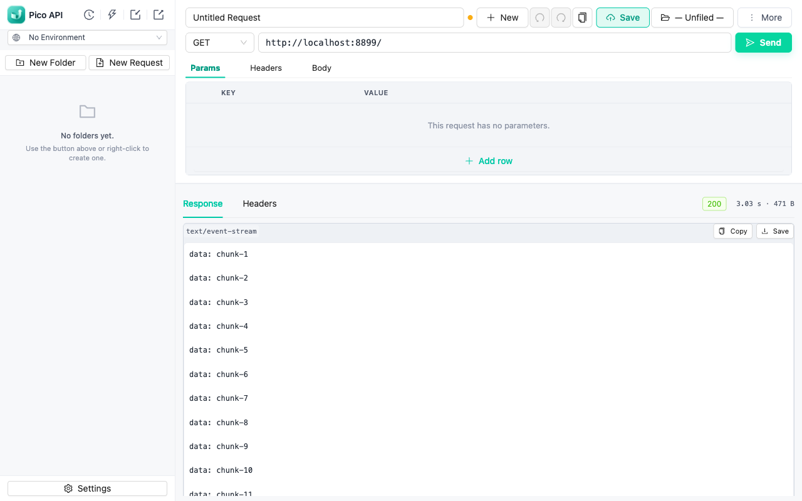

Pico API is a lightweight HTTP client and REST API testing tool for Chrome. Send requests, debug APIs, and watch streaming responses live — without leaving your browser or creating an account.

A focused feature set — nothing you have to sign up for.
Server-sent events and chunked responses render as they arrive — no waiting for the full body.
Switch between dev / staging / prod with {{variables}} resolved everywhere — URL, headers, body, and scripts.
Postman-style pm API in a hardened sandbox: set variables, assert responses, run tests.
Import cURL commands, OpenAPI/Swagger specs, and ApiFox projects. Export collections or copy any request as cURL.
Requests go through the extension's service worker, so CORS won't block you — optionally attach your browser session cookies.
Organize requests in a folder tree, revisit every sent request, and undo/redo edits with full keyboard shortcuts.
All data stays in your browser's IndexedDB. No accounts, no analytics, no sync — your APIs are your business.
A ⌘K-style palette for switching requests and environments, plus send / save / duplicate shortcuts.
Two ways to install — pick whichever you prefer.
npm run build, then load the dist/ folder via chrome://extensions → Developer mode → Load unpacked.Yes. Pico API is free to install and use, with no account required.
No. Everything — saved requests, environments, history, settings — is stored locally in your browser via IndexedDB. There are no analytics, ads, or third-party scripts. See the privacy policy.
Pico API runs entirely inside Chrome with zero setup or account. It is intentionally small: a request builder, response viewer, environments, and scripting — without the platform weight.
Yes. Pico API imports cURL commands, OpenAPI/Swagger specifications, and ApiFox projects.
Yes. Server-sent events and other streaming responses render chunk by chunk as they arrive.